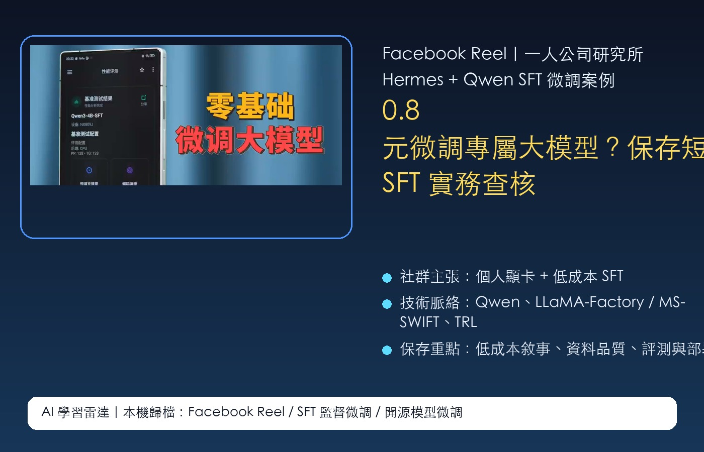
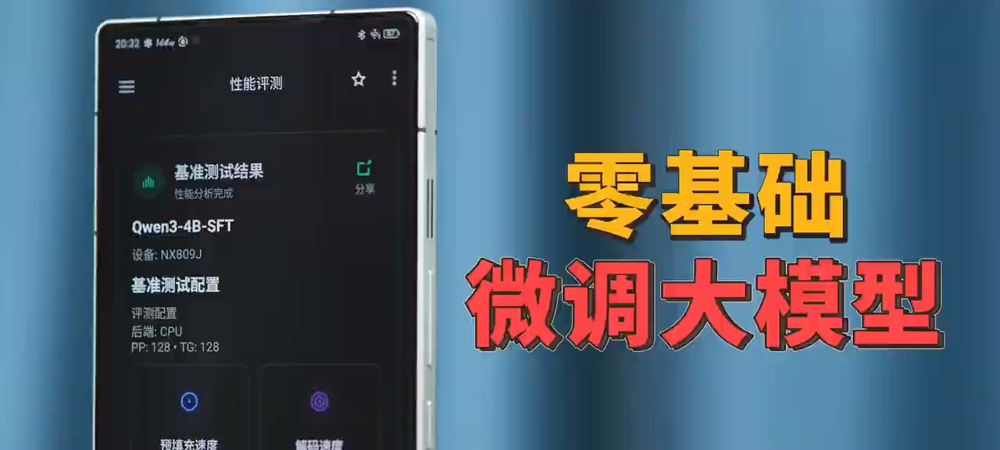

Facebook Reel｜一人公司研究所：Hermes + Qwen SFT「0.8 元微調大模型」短影音案例

為什麼保存
這則 Reel 值得放進 AI 學習雷達，因為它把「大模型微調」從研究室或雲端昂貴訓練，轉譯成一人公司也能理解的短影音敘事：用 Hermes + Qwen 做 SFT 監督微調，只花極低成本與一張個人顯卡，就能訓練專屬 AI 助手。
這個 framing 很有代表性：2026 年的開源模型社群，正在把 SFT、LoRA、量化、本地推理與 Agent 工作流合併成「個人可操作的 AI 基礎設施」。它不只是工具教學，也是一種「低成本 AI 自主化」的內容行銷。

可見資訊
Facebook 登出狀態可解析到以下資訊：
- 來源頁面：一人公司研究所
- Reel canonical：`https://www.facebook.com/reel/1368120382120875`
- OG 互動資訊：擷取時顯示約 5,513 次觀看、46 個心情。
- Reel 文案主張：Hermes + Qwen 實測 SFT 監督微調，只花 0.8 元加上一張個人顯卡，即可訓練專屬 AI 模型。
- 文案標註影片來源：B 站「蓝发少年Linky」。本次歸檔未能獨立定位該 B 站原影片，因此原影片細節先標示為未查核。
縮圖可見手機畫面與大字標題「零基礎 微調大模型」，左側測試畫面顯示 `Qwen3-4B-SFT`、設備 `NX809J` 與基準測試配置，暗示影片主軸是小型 Qwen 模型微調後的本地/手機端性能展示。
技術脈絡拆解
SFT（Supervised Fine-Tuning，監督式微調）通常是用「輸入 → 理想回答」資料集，讓模型更貼近某個任務、語氣、格式或領域知識。它和單純提示詞不同：提示詞是在推理時引導模型，SFT 則會改變模型權重或附加 LoRA adapter。
這則 Reel 提到的幾個關鍵詞，可以這樣理解：
| 關鍵詞 | 代表意義 | 實務注意 |
|---|---|---|
| Hermes | 可能指 Hermes Agent 工作流或相關本地代理環境；需看原片設定才能確認。 | 名稱容易和 Nous Hermes 模型系列混淆，歸檔時避免過度推論。 |
| Qwen | 阿里 Qwen 開源/開放權重模型生態，已有多種本地推理與訓練工具支援。 | 不同 Qwen 版本授權、上下文、硬體需求不同。 |
| SFT | 用標註資料做監督微調，常用於語氣、格式、工具調用或領域任務。 | 資料品質比資料量更重要；錯誤資料會被模型學進去。 |
| 個人顯卡 | 代表低成本微調可能透過 LoRA、QLoRA、量化或小模型完成。 | 訓練可低成本，部署與推理穩定性仍需另算。 |
官方與可靠資料對照
這則 Reel 的「0.8 元」是社群影片標題式主張，本文不把它視為通用成本保證。可查核的部分是：Qwen 官方文件確實整理了 LLaMA-Factory、MS-SWIFT 等訓練路徑；Hugging Face TRL 也提供 SFT Trainer 文件；MS-SWIFT GitHub 頁面明確標示支援 Qwen 系列與 SFT / LoRA / DPO 等訓練流程。
因此，比較保守的結論是：
- **Qwen 模型可被現有開源工具微調**：這點有官方與社群工具文件支持。
- **低成本 SFT 有可能成立**：尤其是小模型、少量資料、LoRA/QLoRA、個人顯卡或已備好的本地硬體。
- **0.8 元不應外推**：實際成本取決於模型大小、資料量、訓練步數、GPU、電費、雲端租用費、錯誤重跑與評測成本。
給欒帥的觀察重點
這類內容最值得觀察的不是「到底是不是 0.8 元」，而是短影音如何把一個工程流程包裝成一人公司可採用的能力：
- **從聊天工具到專屬模型**：把 AI 從「會回答」推進到「會照你的格式、任務與資料工作」。
- **從雲端依賴到本地掌控**：開源模型 + 個人 GPU 的敘事，強調資料、成本與客製化自主權。
- **從模型能力到工作流能力**：真正有價值的不是微調一次，而是資料整理、評測、版本管理、部署與回饋迭代。
風險提醒
- 微調不是萬靈丹；若問題是資料不足、流程不清、評測缺失，SFT 可能只是把錯誤模式固定進模型。
- 「低成本」通常只計算訓練跑一次的直接成本，不一定包含資料清洗、標註、失敗重跑、測試、部署與維護。
- 若資料含個資、客戶對話、內部文件或受版權保護素材，需先確認授權、去識別化與資料保護規範。
- Qwen 與相關工具的授權條款、商用限制、模型版本差異要逐一確認，不宜只看短影音就上線商用。
- 專屬模型若要用於客服、決策、醫療、法律或財務建議，需額外設計安全邊界與人工覆核。
適合保存的原因
這則案例是「開源模型微調大眾化」的代表樣本：它把 SFT、Qwen、本地顯卡與 Hermes 類 Agent 工作流包裝成個人可執行的 AI 自主化路線。日後若要比較 LLaMA-Factory、MS-SWIFT、TRL、Unsloth、Axolotl 或 Hermes Agent 的本地微調/代理工作流，可以用這篇作為內容行銷與實作落差的對照案例。